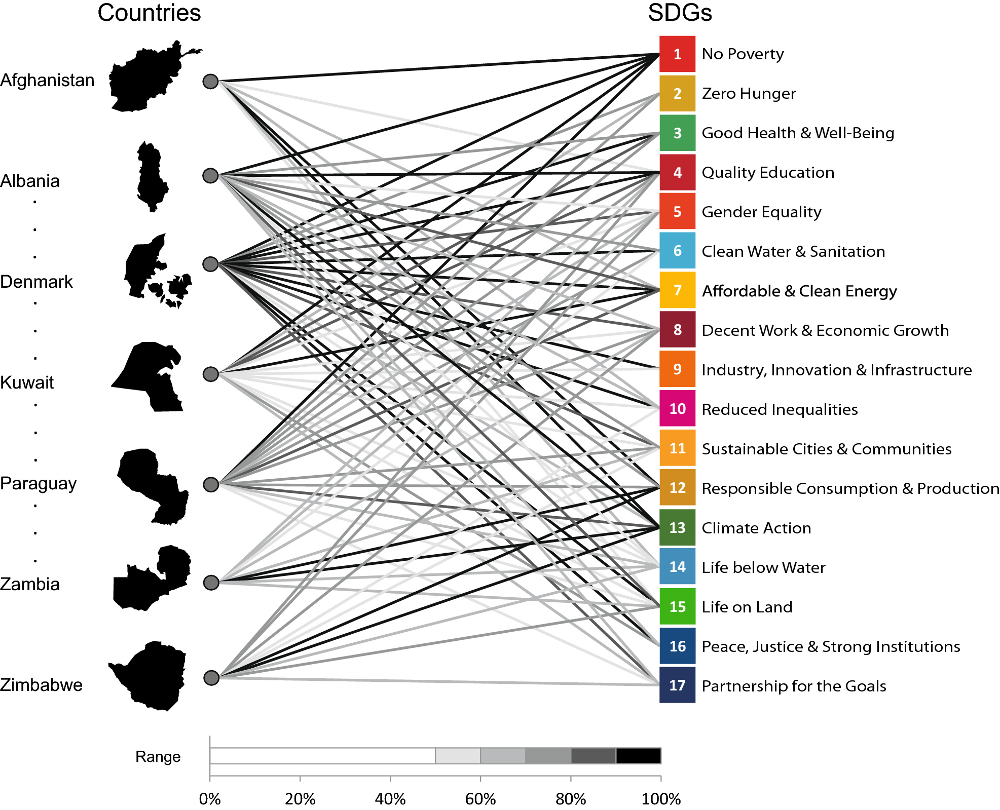
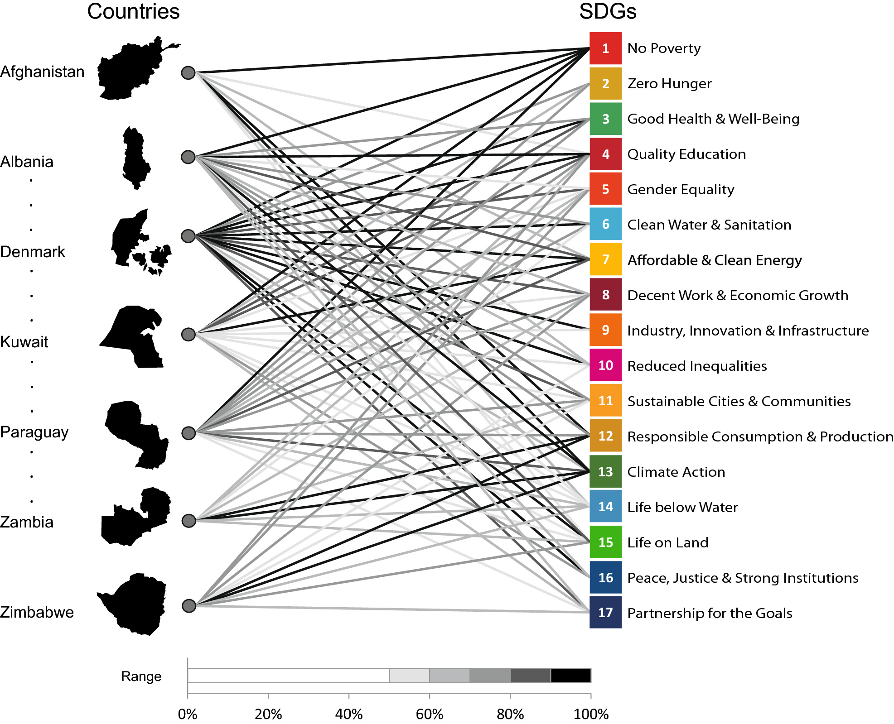

SDGs
Pengertian : Sustainable Development Goals (SDGs) adalah serangkaian tujuan yang ditetapkan oleh Perserikatan Bangsa-Bangsa (PBB) sebagai upaya untuk mencapai dunia yang lebih baik dan dalam jangka waktu lama. Tujuan-tujuan ini menyinggung berbagai aspek kehidupan yang dirancang untuk menjadi panduan bagi semua negara dalam membangun masa depan yang lebih baik bagi semua.
17 Tujuan SDGs :
1. No poverty (Tanpa Kemiskinan)
2. Zero Hunger (Tanpa Kelaparan)
3. Good Health and Well Being (Kehidupan Sehat dan Sejahtera)
4. Quality Education (Pendidikan berkualitas)
5. Gender Equality (Kesetaraan Gender)
6. Clean Water and Sanitation (Air Bersih dan Sanitasi Layak)
7. Affordable and Clean Energy (Energi Bersih dan Terjangkau)
8. Decent Work and Economic Growth (Pekerjaan Layak dan Pertumbuhan Ekonomi)
9. Industry, Innovation, and Infrastructure (Industri, Inovasi, dan Infrastruktur)
10. Reduced Inequalities (Mengurangi Ketimpangan)
11. Sustainable Cities and Communities (Kota dan Komunitas Berkelanjutan)
12. Responsible Consumption and Production (Konsumsi dan Produksi yang Bertanggung Jawab)
13. Climate Action (Penanganan Perubahan Iklim)
14. Life Below Water (Ekosistem Lautan)
15. Life on Land (Ekosistem Daratan)
16. Peace, Justice, and Strong Institutions (Perdamaian, Keadilan, dan Kelembagaan yang Tangguh)
17. Partnerships for the Goals (Kemitraan untuk Mencapai Tujuan)